geom_line(mapping = NULL, data = NULL, stat = "identity", position = "identity", show.legend = NA, inherit.aes = TRUE, na.rm = TRUE, ...)geom_path(mapping = NULL, data = NULL, stat = "identity", position = "identity", lineend = "butt", linejoin = "round", linemitre = 1, na.rm = FALSE, arrow = NULL, show.legend = NA, inherit.aes = TRUE, ...)geom_step(mapping = NULL, data = NULL, stat = "identity", position = "identity", direction = "hv", show.legend = NA, inherit.aes = TRUE, ...)
aes or
aes_. If specified and inherit.aes = TRUE (the
default), is combined with the default mapping at the top level of the
plot. You only need to supply mapping if there isn't a mapping
defined for the plot.NA, the default, includes if any aesthetics are mapped.
FALSE never includes, and TRUE always includes.FALSE, overrides the default aesthetics,
rather than combining with them. This is most useful for helper functions
that define both data and aesthetics and shouldn't inherit behaviour from
the default plot specification, e.g. borders.FALSE (the default), removes missing values with
a warning. If TRUE silently removes missing values.layer. There are
three types of arguments you can use here:
color = "red" or size = 3.
stat associated with the layer.
arrowgeom_path() connects the observations in the order in which they appear
in the data. geom_line() connects them in order of the variable on the
x axis. geom_step() creates a stairstep plot, highlighting exactly
when changes occur.
geom_path understands the following aesthetics (required aesthetics are in bold):
x
y
alpha
colour
linetype
size
# geom_line() is suitable for time series ggplot(economics, aes(date, unemploy)) + geom_line()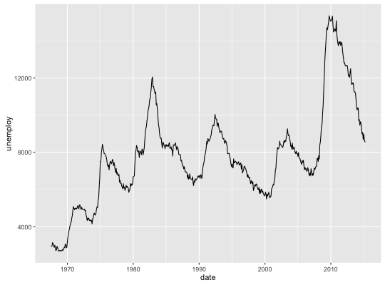
ggplot(economics_long, aes(date, value01, colour = variable)) + geom_line()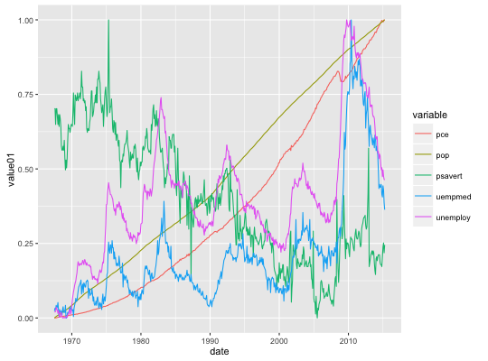
# geom_step() is useful when you want to highlight exactly when # the y value chanes recent <- economics[economics$date > as.Date("2013-01-01"), ] ggplot(recent, aes(date, unemploy)) + geom_line()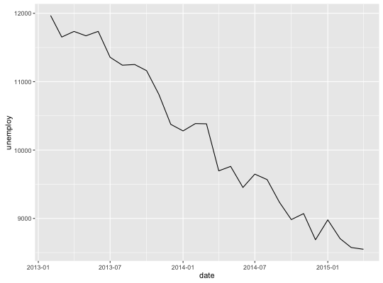
ggplot(recent, aes(date, unemploy)) + geom_step()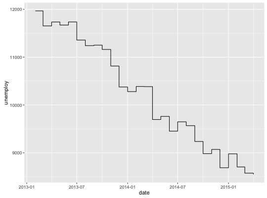
# geom_path lets you explore how two variables are related over time, # e.g. unemployment and personal savings rate m <- ggplot(economics, aes(unemploy/pop, psavert)) m + geom_path()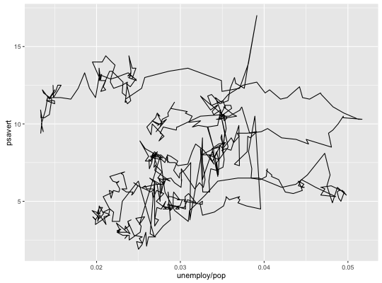
m + geom_path(aes(colour = as.numeric(date)))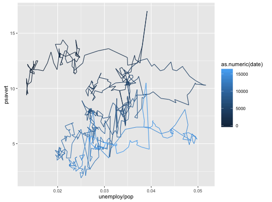
# Changing parameters ---------------------------------------------- ggplot(economics, aes(date, unemploy)) + geom_line(colour = "red")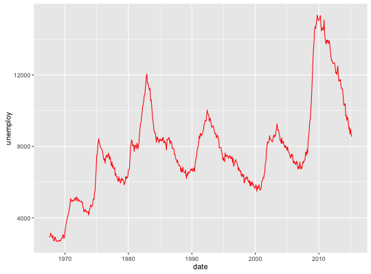
# Use the arrow parameter to add an arrow to the line # See ?arrow for more details c <- ggplot(economics, aes(x = date, y = pop)) c + geom_line(arrow = arrow())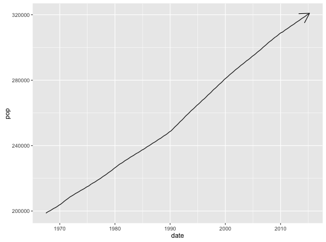
c + geom_line( arrow = arrow(angle = 15, ends = "both", type = "closed") )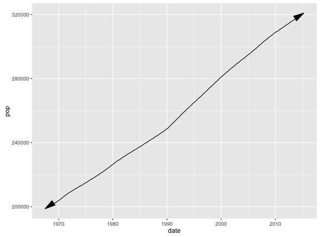
# Control line join parameters df <- data.frame(x = 1:3, y = c(4, 1, 9)) base <- ggplot(df, aes(x, y)) base + geom_path(size = 10)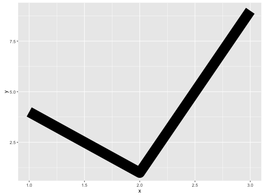
base + geom_path(size = 10, lineend = "round")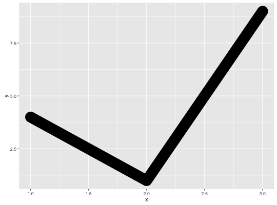
base + geom_path(size = 10, linejoin = "mitre", lineend = "butt")# NAs break the line. Use na.rm = T to suppress the warning message df <- data.frame( x = 1:5, y1 = c(1, 2, 3, 4, NA), y2 = c(NA, 2, 3, 4, 5), y3 = c(1, 2, NA, 4, 5) ) ggplot(df, aes(x, y1)) + geom_point() + geom_line()Warning message: Removed 1 rows containing missing values (geom_point).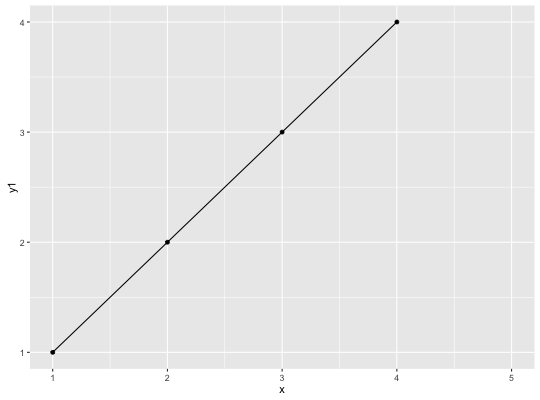
ggplot(df, aes(x, y2)) + geom_point() + geom_line()Warning message: Removed 1 rows containing missing values (geom_point).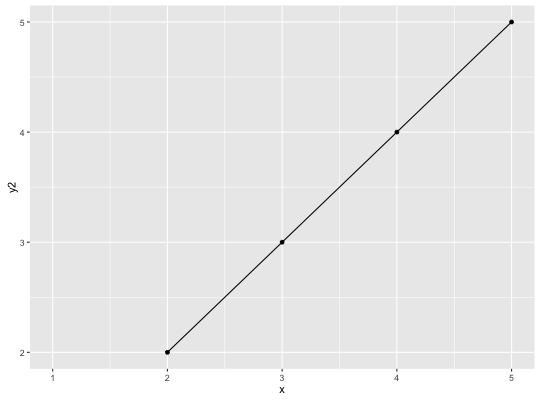
ggplot(df, aes(x, y3)) + geom_point() + geom_line()Warning message: Removed 1 rows containing missing values (geom_point).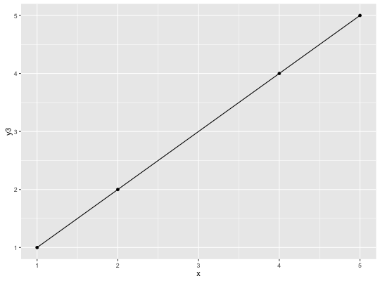
# Setting line type vs colour/size # Line type needs to be applied to a line as a whole, so it can # not be used with colour or size that vary across a line x <- seq(0.01, .99, length.out = 100) df <- data.frame( x = rep(x, 2), y = c(qlogis(x), 2 * qlogis(x)), group = rep(c("a","b"), each = 100) ) p <- ggplot(df, aes(x=x, y=y, group=group)) # These work p + geom_line(linetype = 2)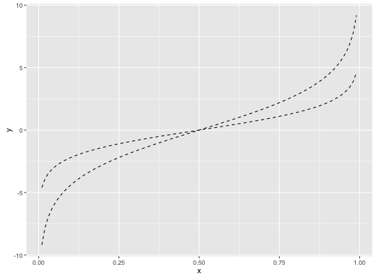
p + geom_line(aes(colour = group), linetype = 2)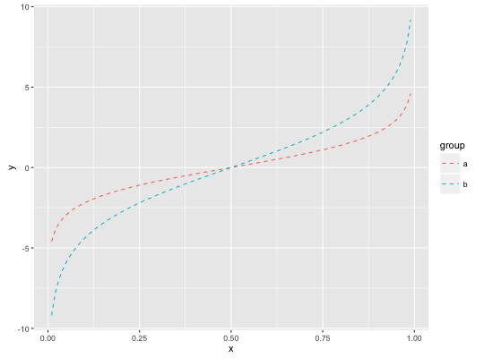
p + geom_line(aes(colour = x))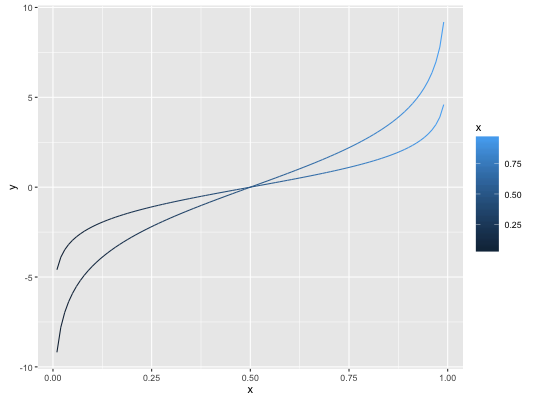
# But this doesn't should_stop(p + geom_line(aes(colour = x), linetype=2))